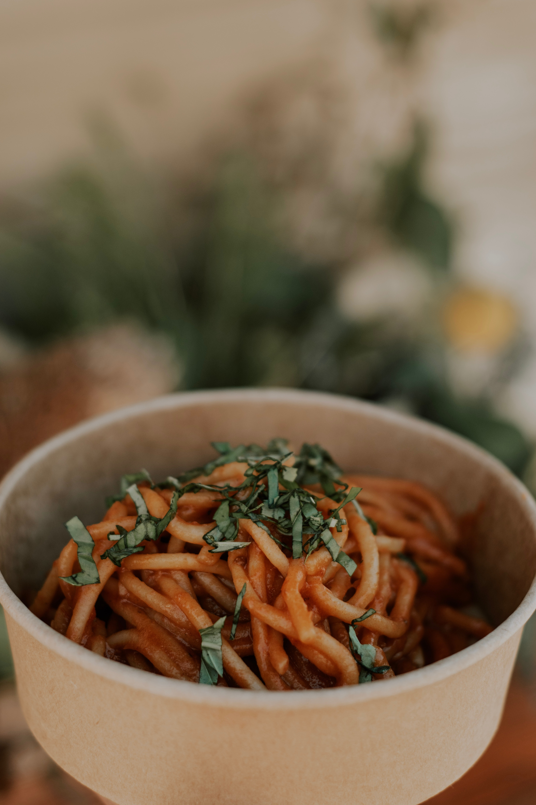

Penne alla Vodka

Description
Penne alla vodka is a pasta dish made with vodka and penne pasta, usually made with heavy cream, crushed
tomatoes, onions, and sometimes sausage, pancetta or peas.
The recipe became very popular in Italy and in the United States around the 1980s, when it was offered to
discotheque customers.The recipe thus became an icon of the fashionable cuisine of the time, which preferred
the use of cream in first courses. Even today, penne alla vodka is a typical dish of Italian-American cuisine
Ingredients
- 1 (16 ounce) package dry penne pasta
- 1 teaspoon olive oil
- 2 cloves garlic, minced
- ⅛ pound prosciutto, chopped
- ½ teaspoon red pepper flakes
- 2 (16 ounce) cans whole peeled tomatoes
- ½ cup vodka
- 1 cup heavy cream
- 1 cup Parmesan cheese
- ½ cup chopped fresh basil leaves
- salt to taste
Steps
- Bring a large pot of lightly salted water to a boil. Add pasta and cook for 8 to 10 minutes or until al dente;
drain.
- Heat oil in a large skillet or wok over medium heat. Saute garlic, prosciutto and red pepper flakes for 1
minute. Stir in tomatoes, and cook for 3 minutes. Stir in vodka and cream. Simmer 15 minutes, or until
thickened. Stir in Parmesan and chopped basil. Toss with pasta until evenly coated.
Back home